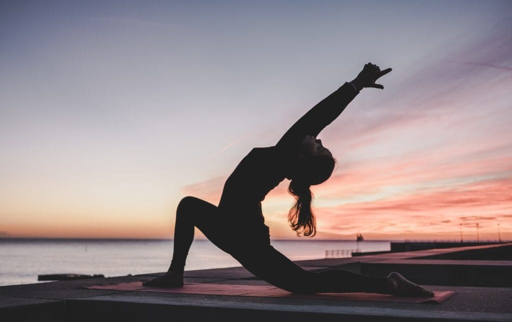

Yoga
Yoga-like practices were first mentioned in the ancient Hindu text known as Rigveda. Yoga is referred to in a number of the Upanishads.The first known appearance of the word "yoga" with the same meaning as the modern term is in the Katha Upanishad,which was probably composed between the fifth and third centuries BCE. Yoga continued to develop as a systematic study and practice during the fifth and sixth centuries BCE in ancient India's ascetic and Śramaṇa movements. The most comprehensive text on Yoga, the Yoga Sutras of Patanjali, date to the early centuries of the Common Era;Yoga philosophy became known as one of the six orthodox philosophical schools (Darśanas) of Hinduism in the second half of the first millennium CE. Hatha yoga texts began to emerge between the ninth and 11th centuries, originating in tantra. Two general theories exist on the origins of yoga. The linear model holds that yoga originated in the Vedic period, as reflected in the Vedic textual corpus, and influenced Buddhism; according to author Edward Fitzpatrick Crangle, this model is mainly supported by Hindu scholars. According to the synthesis model, yoga is a synthesis of non-Vedic and Vedic elements; this model is favoured in Western scholarship. The term "yoga" in the Western world often denotes a modern form of Hatha yoga and a posture-based physical fitness, stress-relief and relaxation technique, consisting largely of asanas; this differs from traditional yoga, which focuses on meditation and release from worldly attachments.It was introduced by gurus from India after the success of Swami Vivekananda's adaptation of yoga without asanas in the late 19th and early 20th centuries. Vivekananda introduced the Yoga Sutras to the West, and they became prominent after the 20th-century success of hatha yoga.

Benefits of Yoga
1. Yoga improves strength, balance and flexibility.
Slow movements and deep breathing increase blood flow and warm up muscles, while holding a pose can build strength.
Try it: Tree Pose
Balance on one foot, while holding the other foot to your calf or above the knee (but never on the knee) at a right angle. Try to focus on one spot in front of you, while you balance for one minute.
2. Yoga helps with back pain relief.
Yoga is as good as basic stretching for easing pain and improving mobility in people with lower back pain. The American College of Physicians recommends yoga as a first-line treatment for chronic low back pain.
Try it: Cat-Cow Pose
Get on all fours, placing your palms underneath your shoulders and your knees underneath your hips. First, inhale, as you let your stomach drop down toward the floor. Then, exhale, as you draw your navel toward your spine, arching your spine like a cat stretching.
3. Yoga can ease arthritis symptoms.
Gentle yoga has been shown to ease some of the discomfort of tender, swollen joints for people with arthritis, according to a Johns Hopkins review of 11 recent studies.
4. Yoga benefits heart health.
Regular yoga practice may reduce levels of stress and body-wide inflammation, contributing to healthier hearts. Several of the factors contributing to heart disease, including high blood pressure and excess weight, can also be addressed through yoga.
Try it: Downward Dog Pose
Get on all fours, then tuck your toes under and bring your sitting bones up, so that you make a triangle shape. Keep a slight bend in your knees, while lengthening your spine and tailbone.
5. Yoga relaxes you, to help you sleep better.
Research shows that a consistent bedtime yoga routine can help you get in the right mindset and prepare your body to fall asleep and stay asleep.
Try It: Legs-Up-the-Wall Pose
Sit with your left side against a wall, then gently turn right and lift your legs up to rest against the wall, keeping your back on the floor and your sitting bones close to the wall. You can remain in this position for 5 to 15 minutes.
6. Yoga can mean more energy and brighter moods.
may feel increased mental and physical energy, a boost in alertness and enthusiasm, and fewer negative feelings after getting into a routine of practicing yoga.
7. Yoga helps you manage stress.
According to the National Institutes of Health, scientific evidence shows that yoga supports stress management, mental health, mindfulness, healthy eating, weight loss and quality sleep.
Try It: Corpse Pose (Savasana)
Lie down with your limbs gently stretched out, away from the body, with your palms facing up. Try to clear your mind while breathing deeply. You can hold this pose for 5 to 15 minutes.
8. Yoga connects you with a supportive community
Participating in yoga classes can ease loneliness and provide an environment for group healing and support. Even during one-on-one sessions loneliness is reduced as one is acknowledged as a unique individual, being listened to and participating in the creation of a personalized yoga plan.
9.Yoga promotes better self-care.
Scientific Research on Yoga Benefits The U.S. military, the National Institutes of Health and other large organizations are listening to — and incorporating — scientific validation of yoga’s value in health care. Numerous studies show yoga’s benefits in arthritis, osteopenia, balance issues, oncology, women’s health, chronic pain and other specialties.
We take variety of classes
Come Join Us!
Get Started
- Jivamukti Yoga
- Anusara Yoga
- Restorative Yoga
- Yin Yoga
- Ashtanga Yoga
- Kundalini Yoga
- Hatha Yoga
- Vinyas Yoga